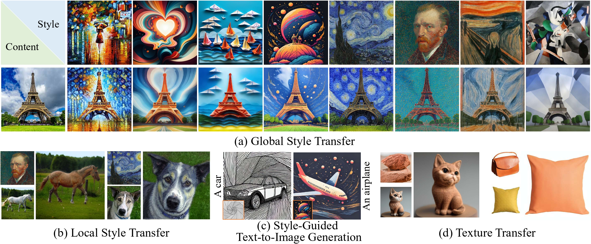

OmniStyle: Filtering High Quality Style Transfer Data at Scale

Style transfer enables the seamless integration of artistic styles from a style image into a content image, resulting in visually striking and aesthetically enriched outputs. Despite numerous advances in this field, existing methods did not explicitly focus on the signature style, which represents the distinct and recognizable visual traits of the image such as geometric and structural patterns, color palettes and brush strokes etc. In this paper, we introduce SigStyle, a framework that leverages the semantic priors that embedded in a personalized text-to-image diffusion model to capture the signature style representation. This style capture process is powered by a hypernetwork that efficiently fine-tunes the diffusion model for any given single style image. Style transfer then is conceptualized as the reconstruction process of content image through learned style tokens from the personalized diffusion model. Additionally, to ensure the content consistency throughout the style transfer process, we introduce a time-aware attention swapping technique that incorporates content information from the original image into the early denoising steps of target image generation. Beyond enabling high-quality signature style transfer across a wide range of styles, SigStyle supports multiple interesting applications, such as local style transfer, texture transfer, style fusion and style-guided text-to-image generation. Quantitative and qualitative evaluations demonstrate our approach outperforms existing style transfer methods for recognizing and transferring the signature styles..
Despite the significant progress of the aforementioned methods, signature style transfer remains underexplored. Signature style refers to the unique and recognizable visual traits that define a particular artistic style, such as geometric and structural patterns, color palettes, and brush strokes. For example, as illustrated in the first row of the figure below, the signature style of the image is defined by the structural arrangement and composition of numerous small images that together form the figure of a person. Additionally, the signature style of the image in the second row is characterized by geometric and structural patterns, as well as distinctive color palettes. Although existing methods often succeed in transferring basic color information, they fail to capture and retain the essential artistic style from the reference images, including small image blocks, colorful ribbon-shaped lines, and other intricate characteristics, as shown in the figure. This highlights a critical limitation: current methods struggle to achieve signature style transfer.
The SigStyle framework. First, given a style image, we perform hypernetwork-powered style-aware fine-tuning for style inversion and represent the reference style as a special token * (see Figure 1.a). In Figure 1, the upper branch represents the reconstruction process of the content image, while the lower branch represents the generation process of the target image. When generating the target image using a pre-trained model and target text, we first use DDIM Inversion to map the content image into noise latents, which are then copied as the initial noise for generating the target image. Then, we adopt time-aware attention swapping to inject structural and content information during the first k steps of the denoising process (see Figure 1.b). In the subsequent T-k steps, we proceed with the usual denoising process without any swapping. Finally, by decoding with VAE, we obtain the style-transferred image.
Figure 2 illustrates the analysis of style attribute learning preferences for the encoder and decoder of the U-Net. We observe that the decoder of the Diffusion U-Net is more sensitive to style attributes, making it better suited for learning style information. Figure 3 presents the architecture of the hypernetwork.
Qualitative comparison with various SOTA image style transfer methods for global style transfer.

Local style transfer applies style only to regions specified by a user-provided mask. Within the masked areas, we use SigStyle for style transfer, while denoising reconstruction is applied to non-masked areas to maintain consistency. Blending operations then integrate these regions seamlessly, producing a complete image and achieving local style transfer.
Texture, appearance, and style are interrelated concepts best learned by the same module, the UNet decoder. By replacing "style" with "appearance" in prompts while keeping inversion and transfer processes unchanged, a mask constrains the texture transfer region. As shown in the following figure, our method demonstrates high-quality cross-domain texture transfer, preserving the original image's pose, structure, identity, and other content.
Our fine-tuning mechanism represents style as a special token *, enabling style-guided text-to-image generation. With a single style image, we can generate images guided by that style (see the first row of the following figure ). When using multiple style images, our method fuses them into a new style for more creative outputs (see the second row of following figure).

Acknowledgements: This work is supported in part by the National Natural Science Foundation of China (No. 62202199, No. 62406134) and the Science and Technology Development Plan of Jilin Province (No. 20230101071JC).